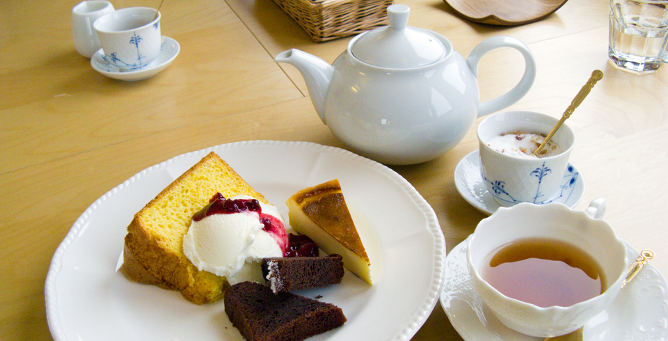

Short Tea Breaks
ちょっとしたお茶の時間
世界中にはたくさんのお茶があります。緑茶に紅茶、ウーロン茶など、その製法や味わいもさまざまですが、リラックスしたり、ちょっと休憩したいときなどには欠かすことができません。お茶のお供に、おいしいお菓子もあると幸せな気分になってしまいます。
紅茶
紅茶は、茶の葉を全発酵させて製造したお茶です。ダージリンやアッサム、ジャワ、ウバ、ニルギリなど、たくさんの銘柄があります。アールグレイといったフレーバーティーも有名です。
基本的に熱湯で入れ、茶葉に合わせて抽出時間を十分に取ります。そのため、保温性の高いポットや温めた茶器を使って入れるのがポイントとなります。ティーコジーでポットをカバーし、温度が下がるのを防ぐのもおすすめです。
ウーロン茶
ウーロン茶は、茶の葉を半発酵させて製造したお茶です。中国茶では「青茶」に分類されるもので、凍頂烏龍茶、東方美人、鉄観音、武夷岩茶、水仙など、さまざまな銘柄があります。
緑茶
緑茶は、茶の葉を発酵させずに製造したお茶で、不発酵茶とも呼ばれます。煎茶やほうじ茶、玄米茶、玉露、抹茶など、日本茶の多くは緑茶に分類されるお茶となっています。